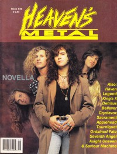

CMnexus
: Contemporary Christian culture, music, and media.
|
Heaven's MetalMay / Jun 1992, #35
| Cover |
|---|
|  | | Writers in this Issue |
|---|
Adolph, Bruce
Adolph, Michael
Arnold, Christy
Bach, David
Beeman, Bob
Crabb II, Kemper B.
Erin, Miss
Hart, David S.
Miller, Diane
Scheetz, Jeff
Sterling, Phil
Van Pelt, Doug
Weir, Brett
|
Cover Feature:
- "My Week With Novella" by Brett Weir
Article:
- "We Are Finding Who King's X Are" by Doug Van Pelt
- "The Bottom Line For Crystavox" by Doug Van Pelt
- "Road Racing With Believer" by Doug Van Pelt
- "Psychoanalyzing Tourniquet" by Miss Erin
- "Speaking to a Seventh Angel" by Doug Van Pelt
- "Digging Into Detritus" by Doug Van Pelt
- "What Legends Are Made Of" by Doug Van Pelt
- "A Sight Unseen Are No Clowns" by Doug Van Pelt
- "Sacrament's Sophomore Waiting Game" by David S. Hart
- "Discovering Your Ordained Fate" by Christy Arnold
- "Hiding In A Haven of Metal" by David S. Hart
- "What is a Saviour Machine?" by Doug Van Pelt
- "Who is Applehead?" by David S. Hart
What ... Sez:Album Review:
- Die Happy - Die Happy by Doug Van Pelt
- Novella - A Liquid Earth by Doug Van Pelt
- Vengeance Rising - Released upon the Earth by Doug Van Pelt
- Betrayal - Renaissance by Death by Phil Sterling
- One Bad Pig - Live / Blow The House Down by Phil Sterling
- Fourth Estate - Fourth Estate by Doug Van Pelt
- One Bad Pig - Live / Blow The House Down [video] by Michael Adolph & Bruce Adolph
- Ordained Fate - Gethsemane by Doug Van Pelt
- Tourniquet - Video Biopsy [video] by Doug Van Pelt
- various artists - An Intense History of Christian Metal by Phil Sterling
- various artists - Portrait of a Spirit by Doug Van Pelt
- Idle Cure - Breakaways by Doug Van Pelt
- various artists - Turn the Wold Around [video] by Doug Van Pelt
- Begotten Breed - Never Say Die by Doug Van Pelt
- Frank's Enemy - demo by Doug Van Pelt
- Last Angel - demo by Doug Van Pelt
- Rocks In Pink Cement - demo by Doug Van Pelt
- The Rest - demo by Doug Van Pelt
- Sovereign Steel - demo by Doug Van Pelt
- various artists - Metal Midnight IV [video] by Doug Van Pelt
- Whiteray - demo by Doug Van Pelt
- Disciple (KS) - demo by Doug Van Pelt
- Trust - 5-song demo by Diane Miller
- Hot Pink Turtle - 4-song tape by Doug Van Pelt
Concert Review:The Christian and Art: "Art and Work Part IV: Links In The Chain of Time" by Kemper B. Crabb II
Pastor Bob by Pastor Bob
Inside / Outside by David Bach
Poster:Licks & Tricks by Jeff Scheetz
HM Back Page: "Honesty"
|
|
<>